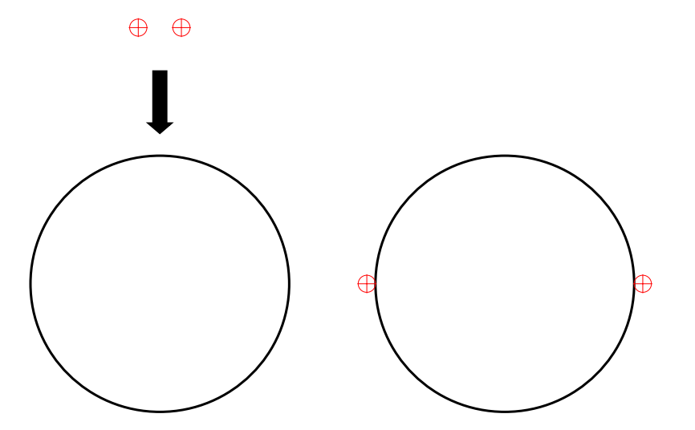
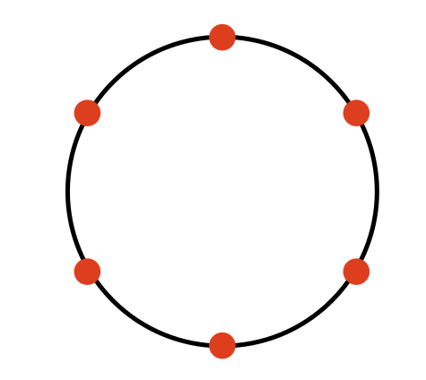
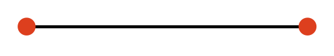
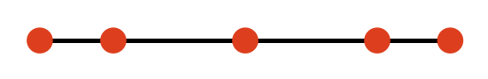
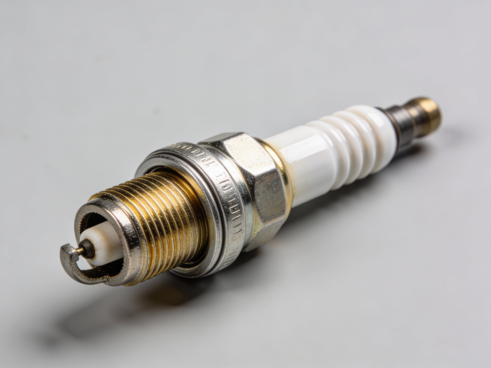
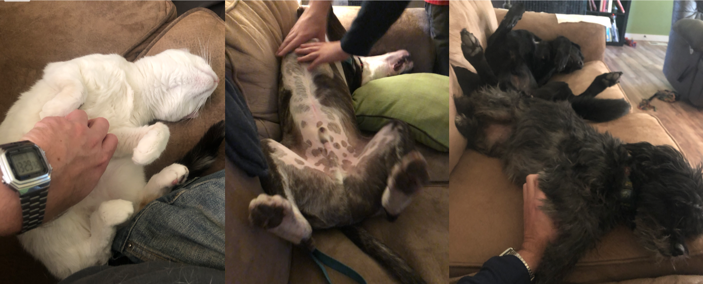

D1.3 Conductors and Insulators#
D1.3.1 Definition - Conductors#
In very simple terms, materials respond differently to electric interactions depending on how freely their charges can move.
Definition — Conductor
A conductor is a material in which electric charges can move freely in response to an electric interaction.
At this point, we have not yet developed a formal definition of the electric force, but you are already familiar with its basic behavior: like charges repel and unlike charges attract. This electrical interaction is what drives charge motion inside a conductor.
Many metals—such as copper, aluminum, gold, and silver—are good conductors, which is why they are commonly used in electrical wiring. Conductors do not have to be metals, however. Water is also a conductor, and in biological systems electric charge is often carried by ions such as Na\(^+\) and K\(^+\) suspended in an aqueous solution.
A key property of conductors is how they respond when charge is added. If a conductor is charged in a small region, the charge rapidly redistributes itself over the conductor’s surface in order to minimize electrical interaction. For example, if two electrons are placed on a wire, they move toward opposite ends due to their mutual repulsion.
This behavior will become central when we later describe conductors using electric fields rather than forces.
Example — Charge Redistribution on a Conducting Ring
Consider a conducting ring on which two positive point charges are placed, as shown in the figure below.
As soon as the charges are placed on the ring, they are free to move. Because like charges repel, the two charges push away from each other along the conductor until they reach an equilibrium configuration—a state in which the electrical interaction between them is minimized.

In this equilibrium state, the charges settle at positions that maximize their separation along the ring. This behavior is a direct consequence of the ability of charges to move freely in a conductor and of the repulsive nature of the electric interaction between like charges.
This situation is reminiscent of the humorous but insightful phenomenon known as Schrödinger’s urinal: when two people use adjacent urinals, they tend to maximize their separation whenever possible.
While lighthearted, the analogy captures an important physical idea:
systems with repulsive interactions naturally evolve toward configurations that minimize interaction by increasing separation.
Box Activity 1 — Charge Arrangement on a Conducting Ring
Refer back to Example — Charge Redistribution on a Conducting Ring.
Now consider a conducting ring on which six identical positive point charges are placed.
Work through the following:
Observation
All charges are free to move along the conducting ring and interact via mutual repulsion.Question
What configuration of six charges minimizes the electrical interaction between them?Hypothesis
Charges will arrange themselves so that they are as far apart as possible along the ring.Prediction
Sketch a possible equilibrium configuration by marking the expected locations of the six charges on a circle.Reasoning
Explain why this arrangement minimizes the interaction compared to any clustered or uneven distribution.
A Possible Solution Guide
The six charges arrange themselves symmetrically, each separated by an angle of
This configuration maximizes the distance between every pair of neighboring charges and therefore minimizes the overall repulsive interaction.

This result illustrates a general principle:
for identical charges constrained to a circle, the equilibrium configuration is a uniform angular distribution.
Box Activity 2 — Charge Arrangement on a Conducting Rod
Consider a straight conducting rod on which two identical positive point charges are placed.
Work through the following:
Observation
The charges are free to move along the rod and repel one another due to their like charge.Question
Where will the charges end up when they reach equilibrium?Hypothesis
The charges will move as far apart as possible along the rod to minimize their mutual interaction.Prediction
Sketch the rod and mark the expected final positions of the two charges.Reasoning
Explain why this configuration represents a stable equilibrium.
A Possible Solution Guide
The two positive charges move to opposite ends of the conducting rod, maximizing their separation.

Any configuration in which the charges are closer together produces a stronger repulsive interaction, causing them to continue moving apart until they reach the ends of the rod.
This result reinforces an important property of conductors:
excess charge resides on the surface and redistributes to minimize interaction.
Box Activity 3 — Five Charges on a Conducting Rod
Consider a straight conducting rod on which five identical positive point charges are placed.
This situation connects to an important real-world phenomenon: the way charge arranges itself on conductors helps explain why lightning tends to strike pointy objects such as antennas, trees, and sharp corners.
Work through the following:
Observation
Charges in a conductor are free to move and will redistribute until they reach an equilibrium configuration.Question
Where will five identical positive charges end up on a straight conducting rod at equilibrium?Hypothesis
Propose a hypothesis for the final arrangement based on the idea that like charges repel and that the system seeks to minimize electrical interaction.Prediction (Sketch)
Draw the rod and mark the five locations you predict the charges will occupy when the system reaches equilibrium.Reasoning
In a few sentences, explain why your predicted arrangement makes physical sense.
A Possible Solution Guide
Based on the earlier activities with charges on a ring and with two charges on a rod, it is very natural to expect that five charges on a straight rod would also arrange themselves evenly spaced. In those cases, symmetry leads directly to equilibrium, so extending that intuition feels reasonable.
However, a straight rod introduces a crucial feature: ends. Unlike a ring, the rod does not wrap around, and this breaks the symmetry experienced by most of the charges (for more than two charges).
Why equal spacing fails
Suppose we attempt an evenly spaced configuration with charges at
The center charge at \(x=0\) experiences zero net force by symmetry, as it always will in any symmetric configuration.
The problem arises for the second and fourth charges (at \(x=\pm d\)).
Consider the charge at \(x=-d\):
The repulsive forces from the charges at \(x=0\) and \(x=-2d\) cancel exactly because they are equal in magnitude and opposite in direction.
However, the repulsive forces from the charges at \(x=+d\) and \(x=+2d\) both push to the left and do not cancel.
As a result, the net force on the charge at \(x=-d\) is not zero, so the evenly spaced configuration cannot represent equilibrium. By symmetry, the same argument applies to the charge at \(x=+d\).
What equilibrium requires
For the system to be in equilibrium, every charge must experience zero net force. This requires the distances between charges to adjust so that the inverse-square repulsions balance for each charge, subject to the constraint that all charges remain on a finite rod.
The resulting equilibrium configuration is:
symmetric about the center of the rod,
but not uniformly spaced.
One equilibrium configuration places the charges in a symmetric arrangement about the center of the rod.

Physical insight and connection
This breakdown of “even spacing” is not a mathematical curiosity—it reflects the role of geometry and boundaries in electrostatics. In real conductors, where charge is continuous rather than discrete, the same effect appears as charge accumulation near regions of high curvature, producing strong electric fields. This is one of the reasons lightning preferentially strikes pointed objects.
D1.3.2 Definition - Insulators#
In contrast to conductors, some materials strongly resist the motion of electric charge.
Definition — Insulator
An insulator is a material in which electric charges do not move freely in response to an electric interaction.
Examples of insulators include glass, rubber, and most standard ceramics (though it is worth noting that some specialized ceramics can become superconductors under appropriate conditions). Glass insulators were used extensively in early telegraph systems, while ceramic insulators are commonly used in modern power lines and spark plugs to prevent charge from leaking into supporting structures.

When an insulator is charged, the charges tend to remain localized near where they were placed. There is no mechanism for the charge to redistribute itself throughout the material. A familiar example occurs when you rub a balloon against your hair: electrons are transferred to the balloon, and because both rubber and latex are insulators, the excess charge remains near the region of contact.
D1.3.3 Charging Mechanisms#
There are several ways an object can become charged or behave as a charged object.
Charging by Friction#
Charging by friction occurs when two different materials are rubbed against one another. During this process, electrons are transferred from one object to the other. The direction of this transfer depends on the materials involved and, in particular, on their electron affinity—a measure of how strongly a material tends to attract electrons.
Common examples include rubbing:
a rod with animal fur,
a balloon against hair or a sweater, or
shoes against a carpet while walking.
To understand what happens physically, consider a neutral rubber rod and a neutral piece of animal fur before rubbing.
Definition — Neutral Object
An object is neutral when it contains equal amounts of positive and negative charge, so that its net electric charge is zero.
Rubber has a greater electron affinity than animal fur. When the two are rubbed together, electrons are transferred from the fur (the electron donor) to the rubber (the electron acceptor). As a result:
the rubber rod acquires a net negative charge,
the animal fur acquires a net positive charge.
The total electric charge of the system does not change during this process—charge is conserved—only redistributed between the objects.

Pollination by Charge#
As bumble bees flies through the air, the air drag is causing charging by friction. This happens to be a quite clever design as the pollen carries a slight opposite charge to the bees. Hence, the pollen will attach itself to the bees through electrical interaction due to the opposite charges. Read more about it in this research paper Detection and Learning of Floral Electric Fields by Bumblebees by Clarke et al..
Death by Charge#
Unfortunately for the bees, the spiders realized this out too, and somehow figured out how to make a spiderweb with the opposite charge of the bees (and flies etc.). Check out this research paper (it is open source, so you can download a pdf file of the paper from this link) Spiderweb deformation induced by electrostatically charge insects by Ortega-Jimenez and Dudley.
Charge by Induction: Method 1#
Consider two neutral, conducting objects that are in contact with each other. Since they are in contact, all charges are even distributed across the combined surcface. If a third object with a net charge is placed in close proximity to the two objects, it will cause the charges on the two objects to re-distribut themselves due to the net interaction occurring. While the third object is close, the first two objects are separated, and the third object is then removed. This process leaves the two original objects with opposite net charges.
Notice that charging by induction requires no contact with the object inducing the charge.
Charge by Induction: Method 2#
Consider a neutral object. A second object with a net charge is places in close proximity to the first object resulting in a re-distribution of the charges on the first object. The first object is then grounded (connected to another object which is capable of accepting charges, for example, the Earth is capable of accepting a lot of charge from an object). While the second object is still in close proximity, the ground connection is removed, and the second object is then removed as well. This process leaves the main object with a net charge.
Notice that charging by induction requires no contact with the object inducing the charge.
Polarization#
This process is not causing an object to have a net charge, but does cause the object to be able to interact through electrical forces. In most atoms and molecules the center of the positive charge coincides with the center of negative charge: think of the electron structure around a nuclei. However, it is possible in some cases to distort this configuration slightly in the presence of a charged object. The result is one “side” of the molecule is an opposite charge in comparison to the other “side”. This realignment can occur on insulators and is known as polarization. Below are a few examples of this phenomenon.
Example — Sequential Charge Sharing Between Conducting Spheres
Three identical conducting spheres — A, B, and C — are mounted on insulating stands so that they can be touched together without interacting with the environment.
Sphere A initially carries a charge of \(+12\,\mathrm{nC}\).
Spheres B and C are initially neutral.
The following sequence is performed:
Sphere A is touched to B, then separated.
Sphere B is then touched to C, then separated.
Question
What is the final charge on sphere C?
Reasoning
Because all spheres are identical conductors, any time two of them touch, the total charge shared between the pair is divided equally.
Step 1: A touches B
Initial charges:
\(q_A = +12\,\mathrm{nC}\)
\(q_B = 0\)
Total charge: \(+12\,\mathrm{nC}\)
After contact: $\( q_A = q_B = \frac{12\,\mathrm{nC}}{2} = 6\,\mathrm{nC}. \)$
Step 2: B touches C
Before contact:
\(q_B = +6\,\mathrm{nC}\)
\(q_C = 0\)
Total charge: \(+6\,\mathrm{nC}\)
After contact: $\( q_B = q_C = \frac{6\,\mathrm{nC}}{2} = 3\,\mathrm{nC}. \)$
Conclusion
The final charge on sphere C is
Key Takeaway
For identical conducting objects:
charge is conserved,
charge redistributes equally upon contact,
and sequential contacts naturally lead to fractional charge transfer.
This same reasoning underlies many electrostatic devices and demonstrations, from charge-sharing experiments to capacitive systems.
Box Activity 1 — Charge Sharing by Contact (Identical Conducting Spheres)
We have four identical conducting spheres: A, B, C, and D.
Sphere A starts with a net charge of \(+Q\).
Spheres B, C, and D start with no net charge.
Now perform the following sequence:
Let A and B touch, then separate.
Let A and C touch, then separate.
Let A and D touch, then separate.
Work through the following:
Observation
When two identical conducting spheres touch, charge can move between them until they reach equilibrium.Question
After the full sequence of touches, what is the final charge on sphere D?Reasoning Strategy
Track the charge on sphere A after each touch, using charge conservation and symmetry.Conclusion
State the final charge on sphere D in terms of \(Q\).
A Possible Solution Guide
Key principle:
When two identical conducting spheres touch, the total charge shared between them splits equally (because they have the same size/capacitance). Charge is conserved in each touch.
Step 1: A touches B
Initial charges:
\(q_A = +Q\)
\(q_B = 0\)
Total charge: \(Q\).
After touching (equal sharing):
So after step 1:
\(q_A = Q/2\)
\(q_B = Q/2\)
Step 2: A touches C
Before touching:
\(q_A = Q/2\)
\(q_C = 0\)
Total charge: \(Q/2\).
After touching:
So after step 2:
\(q_A = Q/4\)
\(q_C = Q/4\)
Step 3: A touches D Before touching:
\(q_A = Q/4\)
\(q_D = 0\)
Total charge: \(Q/4\).
After touching:
Final Answer
Interpretation:
Each time A touches a new neutral identical sphere, A gives away half of whatever charge it has at that moment, so the transferred charge decreases geometrically.